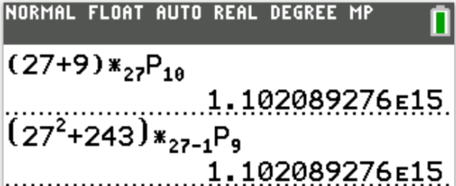

The Joy of a Teacher is the Success of his Students.
I greet you this day,
These are the solutions to the Cambridge O-Level (Ordinary Level) past questions on Combinatorics.
The link to the video solutions will be provided for you. Please subscribe to the YouTube channel to be notified
of upcoming livestreams.
You are welcome to ask questions during the video livestreams.
If you find these resources valuable and if any of these resources were helpful in your passing the
any of the Cambridge Assessments on Mathematics, please consider making a donation:
Cash App: $ExamsSuccess or
cash.app/ExamsSuccess
PayPal: @ExamsSuccess or
PayPal.me/ExamsSuccess
Google charges me for the hosting of this website and my other
educational websites. It does not host any of the websites for free.
Besides, I spend a lot of time to type the questions and the solutions well.
As you probably know, I provide clear explanations on the solutions.
Your donation is appreciated.
Comments, ideas, areas of improvement, questions, and constructive criticisms are welcome.
Feel free to contact me. Please be positive in your message.
I wish you the best.
Thank you.
Say:
n is the number of items (n items)
c and d are the number of duplicate items
n! is read as n-factorial
The number of permutations of nitems is n!
The number of permutations of duplicate items is $\dfrac{n!}{c! * d!}$
The number of permutations of $n$ total items taking $r$ items at a time is $^nP_r \;\;\;or\;\;\; _nP_r
\;\;\;or\;\;\; P(n, r)$
The number of combinations of $n$ total items taking $r$ items at a time is $^nC_r \;\;\;or\;\;\; _nC_r
\;\;\;or\;\;\; C(n, r) \;\;\;or\;\;\; \displaystyle{\binom{n}{r}}$
$
(1.)\:\: 0! = 1 \\[4ex]
(2.)\:\: n! = n * (n - 1) * (n - 2) * (n - 3) * ... * 1 \\[4ex]
(3.)\;\; n! = n * (n - 1)! \\[4ex]
(4.)\;\; n! = n * (n - 1) * (n - 2)!...\text{and so on and so forth} \\[4ex]
(5.)\;\; (n - 1)! = (n - 1) * (n - 2)!...\text{and so on and so forth} \\[4ex]
(6.)\;\; (n - 2)! = (n - 2) * (n - 3) * (n - 4)!...\text{and so on and so forth} \\[4ex]
(7.)\;\; (n - 3)! = (n - 3) * (n - 4) * (n - 5)!...\text{and so on and so forth} \\[4ex]
(8.)\;\; (n + 1)! = (n + 1) * n!...\text{and so on and so forth} \\[4ex]
(9.)\;\; (n + 2)! = (n + 2) * (n + 1) * n!...\text{and so on and so forth} \\[4ex]
(10.)\;\; (n + 3)! = (n + 3) * (n + 2) * (n + 1) * n!...\text{and so on and so forth} \\[4ex]
(11.)\:\: P(n, r) = \dfrac{n!}{(n - r)!} \\[7ex]
(12.)\:\: C(n, r) = \dfrac{n!}{(n - r)!r!} \\[7ex]
(13.)\;\; P(n, r) = n! * C(n, r) \\[4ex]
(14.)\;\; C(n, r) = C(n, n - r) \\[4ex]
(15.)\;\; (n - r) * P(n, r) = P(n, r + 1) \\[4ex]
(16.)\;\; Number\;\;of\;\;circular\;\;permutations = (n - 1)! \\[4ex]
$
Case 1:
Given: a certain number of digits/letters say p
(14.) The number of unique number of digits/letters say c digits/letters that can be formed if the
digits/letters may be repeated is $p^c$ digits/letters.
(15.) The number of unique number of digits/letters say c digits/letters that can be formed if the
digits/letters may not be repeated is $P(p, c)$ digits/letters.
Case 2:
Given: a certain number of people or items in a linear random order say $n$
(16.) The number of ways in which two people or two items must be close together is $2 * (n - 1) * (n - 2)!$
ways
Binomial Theorem
$
(x + y)^n \\[3ex]
= C(n, 0)(x^n)(y^0) + C(n, 1)(x^{n - 1})(y) + C(n, 2)(x^{n - 2})(y^2) + ... + C(n, r)(x^{n - r})(y^r) + ... +
C(n, n)(x^0)(y^n) \\[4ex]
= x^n + C(n, 1)(x^{n - 1})(y) + C(n, 2)(x^{n - 2})(y^2) + ... + C(n, r)(x^{n - r})(y^r) + ... + y^n \\[5ex]
$
Generalized Binomial Series
Recommended for negative values of the outside exponent (negative values of n)
$
(1 + x)^n = 1 + nx + \dfrac{n(n - 1)}{2!}x^2 + \dfrac{n(n - 1)(n - 2)}{3!}x^3 + O(x^4) \\[3ex]
$
where $O(x^4)$ is the Big-O Notation representing the remainder of the series, and indicating that the omitted
terms are of the order of $x^4$ as x approaches zero.
The binomial expansion of $(1 + ax)^n$ is valid when $|ax| \lt 1$
